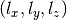

General Aspects¶
This section lists all available input formats from the several quantum chemistry programs and the requirements for their proper processing with ORBKIT. Alongside to the available program output files, there is an interface to cclib. This platform can extract the data from additional computational chemistry packages. At the end of this section, all existing quantities, features and output formats of ORBKIT are introduced.
Note
Although, quantum chemistry programs often support multiple output file formats, all files do not necessarily have the same quality. In order to prevent frustration, here is a list of recommended file formats for different quantum chemistry programs:
| Recommanded File Format | |
| MOLPRO | Molden File |
| GAUSSIAN | GAUSSIAN .log File |
| GAMESS-US | GAMESS-US Output File |
| TURBOMOLE | AOMix File |
| Psi4 | Molden File |
| ORCA | Molden File |
Table of Contents:
Supported Input File Formats¶
Subsequently, you can find a brief overview of all available input file formats and some advices for the input file preparation.
Molden File Format¶
Starts with
[Molden Format]Contains the sections
[Atoms],[GTO],[MO]If more than one
[Molden Format]keyword is present, ORBKIT provides an interactive selection.Contains Cartesian Harmonic Gaussian basis set by default
For Real-Valued (Pure) Spherical Harmonic basis set the following keywords are present:
[5D],[7F],[5D7F],[9G]For more information see
How to create Molden files:
MOLPRO: Here is an example input file
molpro.inp(http://www.molpro.net/info/2012.1/doc/manual/node102.html)PSI4: Here is an example input file
psi4.in(http://www.psicode.org/psi4manual/master/molden.html)ORCA: (https://sites.google.com/site/orcainputlibrary/printing-and-visualization)
$ orca_2mkl gbw-basename -molden
Attention
For TURBOMOLE, please use the AOMix File format and not the molden file format, since here, the norm of the atomic orbitals and the order of molecular orbital coefficients are not consistent.
AOMix File Format¶
- Very similar to the molden file format
- Starts with
[AOMix Format]- Contains the sections
[Atoms],[GTO],[MO]- If more than one
[AOMix Format]keyword is present, ORBKIT provides an interactive selection.- Contains Cartesian Harmonic Gaussian basis set by default
- How to create AOMix files:
- TURBOMOLE: Run
t2aomixin the TURBOMOLE working directory
GAUSSIAN .log File¶
Use the following parameters in your root section
gfinput IOP(6/7=3)Real-Valued (Pure) Spherical Harmonic basis set is chosen by default
You may switch manually to Cartesian Harmonic Gaussian basis set using
6D 10FIf more than one “linked” file/geometry/atomic orbitals/molecular orbitals section is present in the .log file, ORBKIT provides an interactive selection.
GAUSSIAN Formatted Checkpoint File¶
Contains Cartesian Harmonic Gaussian basis set by default
Not applicable for natural orbitals => occupation numbers are not printed
Labels of the molecular orbitals are also not printed
How to create FChk files:
GAUSSIAN:
Add
%Chk=chkpt-fileto your Gaussian input fileUse
formchkto convert the chk file:$ formchk chkpt-file formatted-filePSI4: Here is an example input file
psi4.in(http://psicode.org/psi4manual/master/fchk.html)
GAMESS-US Output File¶
- Please use Cartesian Harmonic Gaussian basis set (default)
- Hint: GAMESS-US uses a non-standard order of basis functions. Thus, the “exp_list” is explicitly defined in
qc.ao_spec(cf. Central Variables for details)
wfn/wfx Files¶
Contains Cartesian Harmonic Gaussian basis set by default
How to create wfn/wfx files:
ORCA: (https://sites.google.com/site/orcainputlibrary/orbital-and-density-analysis)
$ orca_2aim gbw-basename
Interface to cclib Library¶
The cclib library is an open source Python package which allows for the parsing and interpreting data of quantum chemistry packages. It is well checked for multiple versions of different programs. The interface for cclib that we have implemented converts data extracted with cclib into the data structure of ORBKIT. A tutorial for the usage of this interface is given in Tutorial for Input Processing with cclib.
Capabilities of ORBKIT¶
ORBKIT is designed with a modular structure. This allows to use it not only as a standalone version but also to combine its individual modules or functions in user-written Python programs. Each module consists of different functions accomplishing specific tasks. Thus, there are three ways to use ORBKIT:
- As a standalone program via the Terminal (Usage via the Terminal)
- With a Python script setting options and calling the main function of ORBKIT (ORBKIT’s High-Level Interface)
- With a user-written Python program using the built-in functions of ORBKIT (ORBKIT’s Low-Level Interface)
Detailed tutorials for the three variants are given in the respective sections. All grid-based quantities and most of the options can be applied in each of these variants. The non grid-based quantities are solely available via the low-level interface. The complete list of all quantities, options, and output formats can be seen below.
Computable Quantities¶
| Quantity | Usage via Terminal | High-Level Interface | Low-Level Interface |
| Electron Density | ✔ | ✔ | ✔ |
| Atomic and Molecular Orbitals | ✔ | ✔ | ✔ |
| Orbital Derivatives | ✔ | ✔ | ✔ |
| Spin Density | ✔ | ✔ | ✔ |
| Gross Atomic Density | ✔ | ✔ | ✔ |
| Total Dipole Moment | ✘ | ✘ | ✔ |
| Nuclear Dipole Moment | ✘ | ✘ | ✔ |
| Mulliken and Löwdin Charges | ✘ | ✘ | ✔ |
| Center of Charge and Mass | ✘ | ✘ | ✔ |
Options and Features¶
| Grid Options | Usage via Terminal | High-Level Interface | Low-Level Interface |
| Cartesian Equidistant Grid | ✔ | ✔ | ✔ |
| Spherical Equidistant Grid | ✔ | ✔ | ✔ |
| Arbitrary Vector Grid | ✔ | ✔ | ✔ |
| Random Grid | ✘ | ✘ | ✔ |
| Adaption to Molecule Structure | ✔ | ✔ | ✔ |
| Center Grid around Nuclei | ✔ | ✔ | ✔ |
| Symmetry Operations on Grid | ✘ | ✘ | ✔ |
| Special Features | Usage via Terminal | High-Level Interface | Low-Level Interface |
| Multiple File Handling | ✘ | ✘ | ✔ |
| Ordering of Molecular Orbitals | ✘ | ✘ | ✔ |
| Interpolation | ✘ | ✘ | ✔ |
| MO Transition Flux Density | ✘ | ✘ | ✔ |
Output Formats¶
| Output Formats | Usage via Terminal | High-Level Interface | Low-Level Interface |
| HDF5 Files | ✔ | ✔ | ✔ |
| Gaussian Cube Files | ✔ | ✔ | ✔ |
| VMD Script Files | ✔ | ✔ | ✔ |
| ZIBAmira Mesh Files | ✔ | ✔ | ✔ |
| ZIBAmira Network Files | ✔ | ✔ | ✔ |
| Mayavi Visualization | ✔ | ✔ | ✔ |
| XYZ and PBE Files | ✘ | ✘ | ✔ |
Notes on Gaussian Basis Sets¶
In modern quantum chemistry for finite systems, there are two widely used basis set types: Cartesian harmonic Gaussian basis sets and real-valued (pure) spherical harmonic Gaussian basis sets. While ORBKIT internally uses the former type, it is able to handle the latter using a transformation.
Cartesian Harmonic Gaussian Basis Sets¶
Internally, ORBKIT works with Cartesian Harmonic Gaussian basis sets. Unless otherwise stated (cf. Central Variables for details), it assumes the standard Molden basis function order for the exponents :
- s: (0,0,0)
- p: (1,0,0), (0,1,0), (0,0,1)
- d: (2,0,0), (0,2,0), (0,0,2), (1,1,0), (1,0,1), (0,1,1)
- f: (3,0,0), (0,3,0), (0,0,3), (1,2,0), (2,1,0), (2,0,1), (1,0,2), (0,1,2), (0,2,1), (1,1,1)
- g: (4,0,0), (0,4,0), (0,0,4), (3,1,0), (3,0,1), (1,3,0), (0,3,1), (1,0,3), (0,1,3), (2,2,0), (2,0,2), (0,2,2), (2,1,1), (1,2,1), (1,1,2)
Hint
Unless the exponents are not defined explicitly using “exp_list” in
qc.ao_spec (cf. Central Variables for details),
ORBKIT is restricted to s, p, d, f, and g atomic orbitals (Molden file
limitation).
Real-Valued (Pure) Spherical Harmonic Gaussian basis sets¶
ORBKIT supports Spherical Harmonic Gaussian basis sets currently up to g atomic orbitals. After computing the Cartesian Gaussian basis set, it converts the atomic orbitals to a Spherical Harmonic Gaussian basis. The conversion procedure is adapted from
H.B. Schlegel and M.J. Frisch, International Journal of Quantum Chemistry, 54, 83 (1995).